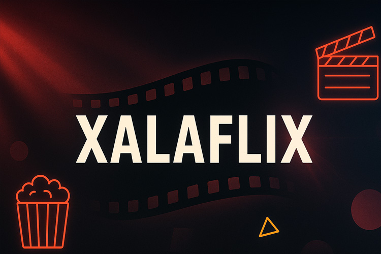
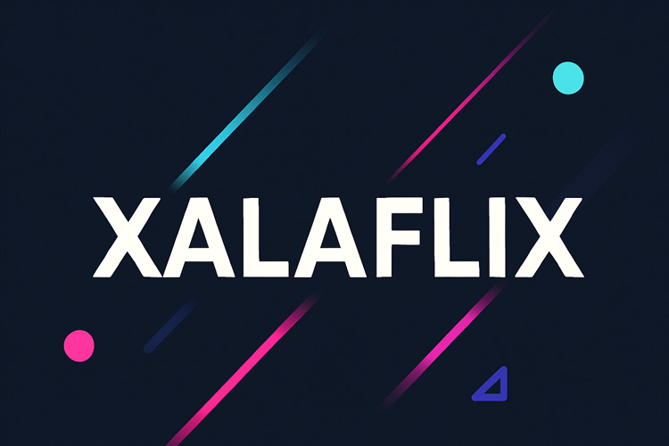

XalaFlix - Voir Film complet en streaming VF gratuit
xalaflix révolutionne la manière dont nous visionnons nos films préférés en proposant un accès gratuit et illimité aux dernières sorties en version doublée et sous-titrée. Sans inscription fastidieuse ni abonnement payant, cette plateforme garantit une expérience de streaming fluide en haute définition. Que vous soyez amateur de comédies françaises ou de blockbusters internationaux, xalaflix répond à toutes vos envies cinéphiles.
Pourquoi choisir xalaflix pour votre film en HD ?
- Gratuit et sans inscription : plus de formulaires à remplir.
- Versions doublées et sous-titrées en français, disponibles dès la sortie.
- Qualité HD et flux rapide, sans coupure ni publicité envahissante.
- Mises à jour quotidiennes pour les dernières nouveautés.
- Accès direct au XalaFlix site officiel pour une sécurité optimale.
« Avec xalaflix, j’ai pu regarder mes films préférés en HD sans la moindre interruption, et tout est toujours à jour ! » — Thomas Lefèvre, spécialiste multimédia

Comment accéder au site officiel XalaFlix ?
Étape 1 : Ouvrir le XalaFlix site officiel
- 1. Rendez-vous sur l’URL du XalaFlix site officiel.
- 2. Sélectionnez votre film ou série dans la barre de recherche.
- 3. Choisissez la version (doublée ou sous-titrée).
- 4. Cliquez sur le bouton « Play ».
- 5. Profitez du XalaFlix streaming en HD.
Étape 2 : Optimiser votre expérience
- Activez les sous-titres si besoin.
- Ajustez la qualité vidéo selon votre connexion.
- Découvrez les catégories thématiques (action, comédie, thriller…).

XalaFlix vs autres plateformes de streaming gratuites
-
XalaFlix
- Qualité : HD jusqu’à 1080p
- Versions : Doublée & VOSTFR
- Sous-titres : Disponible instantanément
- Points forts : Mise à jour quotidienne, gratuit
-
Sadisflix
- Qualité : HD 720p
- Versions : VOSTFR uniquement
- Sous-titres : Téléchargement parfois lent
- Points forts : Large catalogue de séries
-
Filmoflix
- Qualité : HD
- Versions : Doublée uniquement
- Sous-titres : Présence d’annonces
- Points forts : Interface claire
-
Cinepulse
- Qualité : 4K (selon titre)
- Versions : VOSTFR
- Sous-titres : Qualité variable
- Points forts : Contenu exclusif
-
Wiflix
- Qualité : HD 1080p
- Versions : Doublée & VOSTFR
- Sous-titres : Rapide
- Points forts : Sélection “coups de cœur”
Découvrez aussi Papadustream, Empire Streaming, HDSS, Coflix, Senpai Stream et French Stream pour enrichir votre choix de plateformes.
Astuces pour un streaming optimal sur XalaFlix
- Videz le cache de votre navigateur avant de lancer une vidéo.
- Vérifiez votre débit internet (> 5 Mb/s pour HD).
- Utilisez un VPN si l’accès est restreint dans votre région.
- Fermez les applications en arrière-plan pour libérer de la bande passante.
- Conseil rapide : préférez un câble Ethernet à un Wi-Fi instable.
« XalaFlix parvient à allier rapidité et qualité, même lors des pics de trafic. C’est vraiment du haut niveau pour une plateforme gratuite. » — Sophie Martin, consultante en divertissement numérique
Conclusion
En somme, xalaflix s’impose comme la référence du streaming gratuit en français, offrant un large choix de films en HD, doublés ou sous-titrés, sans contrainte d’abonnement. Alors, pourquoi attendre ? Rendez-vous sur xalaflix dès maintenant et plongez dans une expérience cinématographique sans compromis !
FAQ
1. Qu’est-ce que xalaflix et comment y accéder ?
xalaflix est une plateforme de streaming gratuite proposant des films en version doublée et sous-titrée en français. Il suffit de se rendre sur le site officiel, de sélectionner un titre et de cliquer sur “Play”.
2. Faut-il créer un compte pour utiliser XalaFlix ?
Non, aucune inscription n’est requise. Vous accédez directement au catalogue complet sans créer de compte.
3. XalaFlix propose-t-il des séries TV ?
Oui, en plus des films, la plateforme met à disposition un large choix de séries, toutes en HD et disponibles rapidement.
4. Puis-je regarder en HD si ma connexion est lente ?
Vous pouvez ajuster la qualité vidéo selon votre débit. Pour le HD (1080p), un minimum de 5 Mb/s est conseillé.
5. Quels sont les avantages de XalaFlix par rapport à Filmoflix ou Sadisflix ?
XalaFlix offre des mises à jour quotidiennes, un choix entre versions doublées et VOSTFR, et un streaming sans publicité intrusive.
6. Comment signaler un film manquant ou un problème de streaming ?
Utilisez le formulaire de contact sur le XalaFlix site officiel pour soumettre vos demandes ou signaler des bugs.
7. XalaFlix est-il accessible sur mobile et tablette ?
Oui, le site est responsive : il s’adapte automatiquement à tous les écrans (smartphone, tablette, PC).